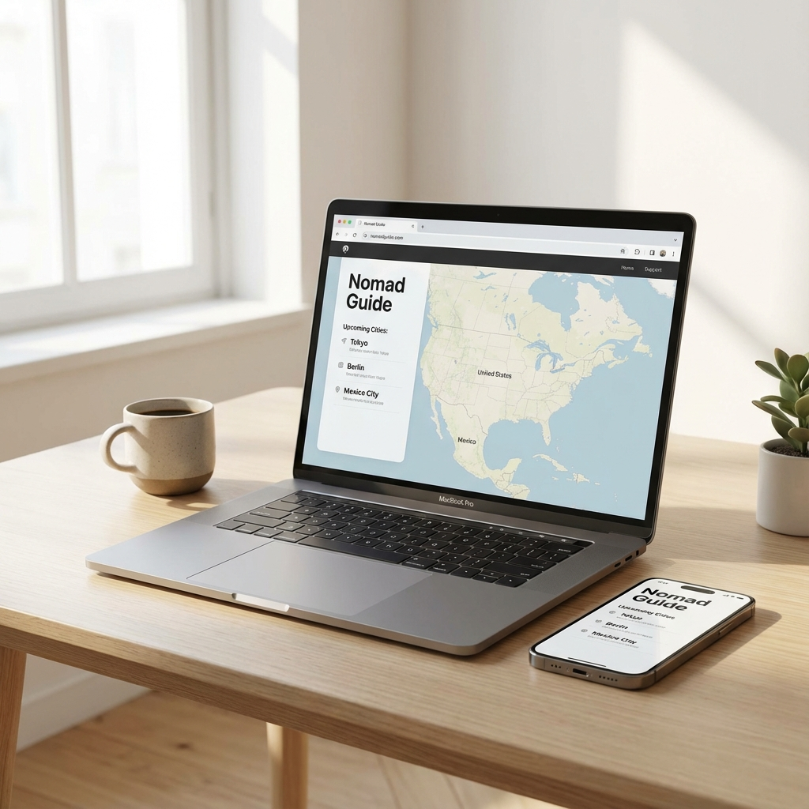

List of Companies that Give Free Government iPhones

In the quest to bridge the digital divide, the US government's Affordable Connectivity Program (ACP) and Lifeline program have been instrumental. However, the government itself doesn't hand out phones; they partner with private wireless providers to distribute these essential devices. A common misconception is that all providers are the same, but when it comes to getting a high-quality device like an iPhone, choosing the right company matters.
Why the Provider Matters
While many companies offer free Android devices, only a select few have the inventory and capability to offer premium smartphones like the Apple iPhone. These are typically refurbished models ranging from the iPhone 6s up to newer generations depending on availability.
Finding a provider that services your specific state and offers iPhones can be a bit of a treasure hunt. Some of the most well-known names include AirTalk Wireless, Cintex Wireless, and NewPhone Wireless, among others. Each of these carriers puts their unique spin on the government benefit, often bundling it with free monthly data, talk, and text plans.
If you are looking to maximize your benefit, it is crucial to compare these providers. You want to look for transparent terms, good network coverage in your local area, and of course, a track record of actually delivering iPhones as promised. We have compiled a comprehensive resource to help you navigate these options without the headache of visiting every carrier's site individuallly.
For a detailed breakdown and to find a provider that services your zip code, check out our complete directory below.
List of Companies that Give Free Government iPhones